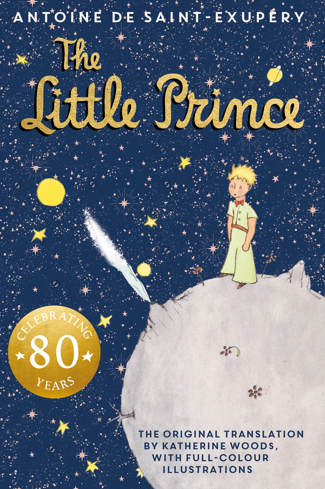
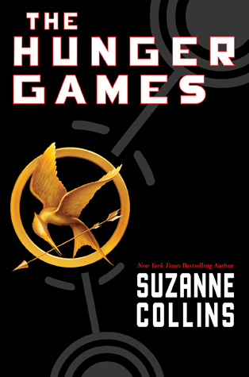
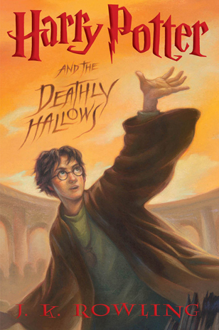

The Hobbit
Bilbo Baggins is a hobbit who enjoys a comfortable, unambitious life, rarely travelling further than the pantry of his hobbit-hole in Bag End. But his contentment is disturbed when the wizard, Gandalf, and a company of thirteen dwarves arrive on his doorstep one day to whisk him away on an unexpected journey ‘there and back again’. They have a plot to raid the treasure hoard of Smaug the Magnificent, a large and very dangerous dragon… The prelude to The Lord of the Rings, The Hobbit has sold many millions of copies since its publication in 1937, establishing itself as one of the most beloved and influential books of the twentieth century.
Price: £9.99
Pay
The Little Prince
The little prince lived on a very small planet, hardly any bigger than a house. Lonely on his tiny world, one day the prince, catching hold of a migration of wild birds, left on a journey across the stars to learn life’s mysteries of love, loss and beauty in a universe corrupted by grown-up logic. First published in 1943, and since translated into 270 languages and 26 different alphabets, few books have touched the world like Antoine de Saint-Exupéry’s modern fable The Little Prince. In its first Folio edition, this definitive two-volume production includes a new introduction by Saint-Exupéry’s biographer and Pulitzer Prize-winning author Stacy Schiff, as well as restored versions of Saint-Exupéry’s unforgettable illustrations, as inseparable from the story as the words themselves.
Price: £9.99
Pay
The Hunger Games
In the ruins of a place once known as North America lies the nation of Panem, a shining Capitol surrounded by twelve outlying districts. The Capitol is harsh and cruel and keeps the districts in line by forcing them all to send one boy and one girl between the ages of twelve and eighteen to participate in the annual Hunger Games, a fight to the death on live TV. Sixteen-year-old Katniss Everdeen regards it as a death sentence when she steps forward to take her sister's place in the Games. But Katniss has been close to dead before-and survival, for her, is second nature. Without really meaning to, she becomes a contender. But if she is to win, she will have to start making choices that weigh survival against humanity and life against love.
Price: £9.99
Pay
Harry Potter and the Deathly Hallows
As he climbs into the sidecar of Hagrid's motorbike and takes to the skies, leaving Privet Drive for the last time, Harry Potter knows that Lord Voldemort and the Death Eaters are not far behind. The protective charm that has kept Harry safe until now is broken, but he cannot keep hiding. The Dark Lord is breathing fear into everything Harry loves, and to stop him Harry will have to find and destroy the remaining Horcruxes. The final battle must begin - Harry must stand and face his enemy. J.K. Rowling's enduringly popular Harry Potter books continue to captivate new generations of readers. Harry's seventh adventure alongside his friends, Ron and Hermione, invites you to explore even more of the wizarding world; from the tombstones of Godric's Hollow to the sweeping grandeur of Malfoy Manor.
Price: £9.99
Pay